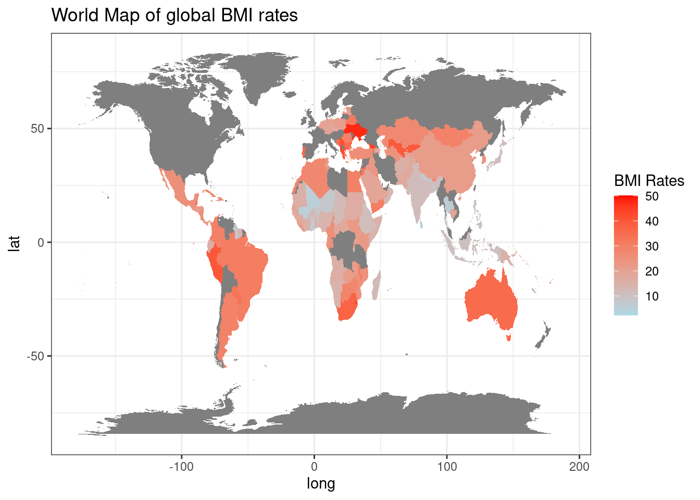
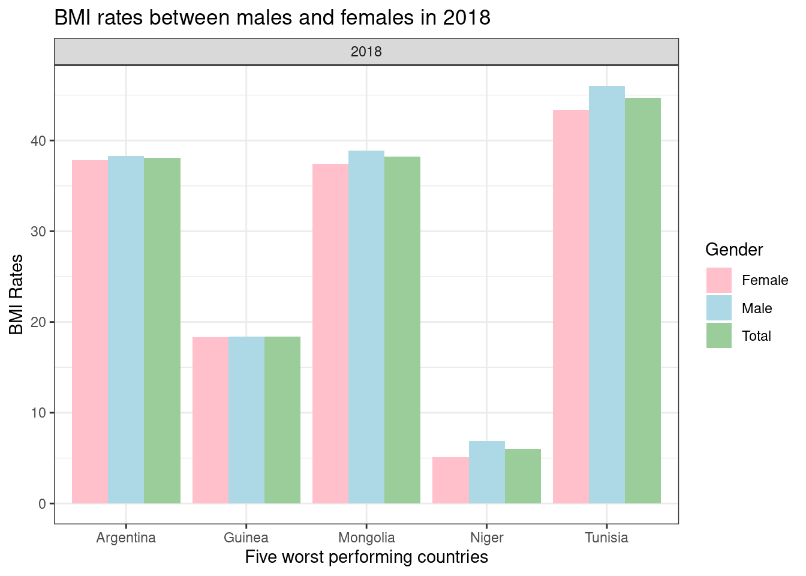
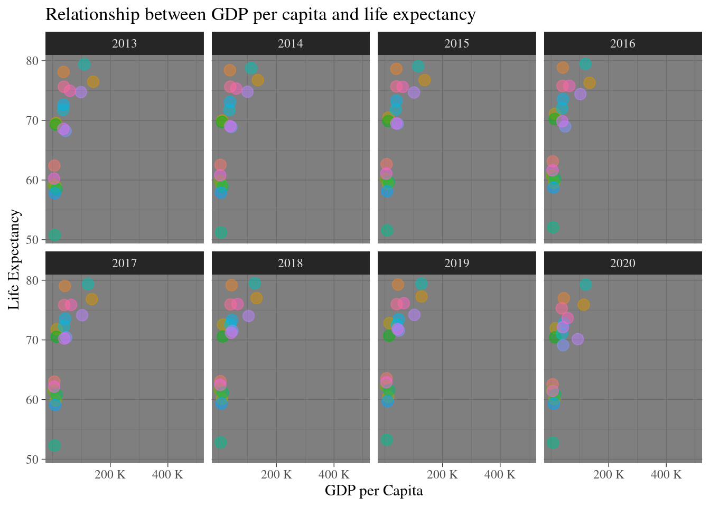

Analysis Of Key Global Health Indicators
Relationship Between Socioeconomic Trends and Global Body Mass Index Rates
Overview
The overall aim behind this report is to provide a comprehensive picture of the positive correlation between SOCIO-ECONOMIC DISPARITIES and global HEALTH INDICATORS.
As an essential metric commonly utilised towards evaluating global health trends, the Body Mass Index (BMI) levels within various regions and selected countries will be analysed. In evaluating BMI as a health indicator, it is generally acknowledged that LOW LEVELS of under 18.5 care classified as UNDERWEIGHT, whilst a rate of over 30 is considered OBESITY. Throughout this analysis, examples of both ends of the spectrum, heightened and decreased rates, will be provided within various different areas. Upon the conclusion of the report, a thorough understanding aims to be received, centred around offering confirmation to the general perception that countries of which suffer more severely with either low or high rates are more negatively impacted by socioeconomic factors, with this report applying both GDP PER CAPITA and LIFE EXPECTANCY AT BIRTH to support this viewpoint.
WORLD MAP: Global BMI Rates in the Available Countries Between 1987 and 2020
Through a direct focus on this world map, a comparative analysis can be provided between the particular countries suffering from both high and low rates of BMI. For instance, it is clear that all of Argentina, Mongolia and Tunisia have heightened rates, whilst underdeveloped areas including Guinea and Niger record signifcantly lower rates. Given these areas are generally considered poorer, it provides early evidence of the extent to the socio-economic impact on these findings.
Time Series Chart: Evolution of BMI Trends in Selected Countries Between 1987 and 2020
The time series chart provides a more focused depiction of the overall evolution of global BMI rates between 1987 and 2020. As a means of conducting a regional evaluation, attention is placed on the selection of three countries from each continent, with the overall aim of portraying the fluctuating nature of BMI findings as a global issue .
The most notable component of this chart is the ultimate positive correlation between the time period in which both significant spikes and decreases within this data occur. Whilst Europe acts as an outlier due to the limited data, the global pattern of BMI trends are confirmed. Through evaluating the evolution of each country within the various regions, fluctuating rates, with the remainder of this analysis set out ot identify the various factors behind this
Bar Chart: Comparison Between Males and Females in the Five Most Severely Impacted Countries in 2018

The standout component of this section is the equal spread of BMI levels amongst both males and females. Whilst the data between each country does portray the fact males do display a slightlly higher recording than females, the overall trend is quite balanced. In addition, this can be identified in both areas suffering from high levels and obesity, and those in which the rates are low and undernourishment is prominent. The next section will highlight how the overall outcome of this involves reduced life expectancy, regardless of a country being considered underdeveloped, developing or developed, as seen through this chart.
Scatter Plot: Overall Outcome of BMI Trends on Socio-Economic Factors Between 2013 and 2020

The trend displayed within the scatter plot offers confirmation to the overall global perception that countries suffering more severely from high and low levels of BMI face more serious socio-economic factors. In the case of this example, this incorporates high levels of GDP per capita and lower life expectancy. Whilst countries facing low levels of BMI, such as Guinea and Niger, are faced with extremely low rates of GDP per capita, the decreased life expectancy at birth rates can actually also be attributed to areas with heightened levels of BMI, with a mixture of obesity and malnourishment contributing to the life expectancy trend displayed in this chart.
Conclusion & Reccomendations
Overall, this analysis offers a confirmation to the positive global correlation between socio-economic factors and the ultimate health standards within countries accross the world. Through mapping these trends, various conclusions can be drawn. Whilst the data does suggest an overall equal spread between males and females, it has identified that the areas and regions suffering from particularly low and high levels of BMI, beyond the reccommended rates, subsequently encounter higher levels of GDP per capita and lower levels of life expectancy. As a direct result of this data, it not only confirms the ultimate relationship between health indicators and socio-economic factors, but raises the need for URGENT action. Taking this into consideration, we can conclude on the note over the necessity and *urgent need for increased policies, assistance and aid to these particular areas. In doing so, the global efforts and incentive should be based on transforming the worrisome trends identified in this analysis and creating a world with healthier living standards and populations**.